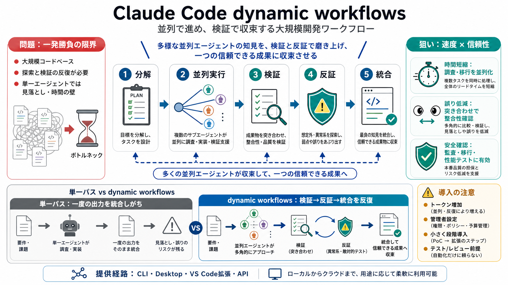

The Mental Framework for Unlocking Agentic Workflows
... Claude Code orchestrates around ~20 parallel researcher sub-agents to explore changelogs. At its peak, the workflow …

dynamic workflows（ダイナミック・ワークフロー）
Claude Code に新しく導入される dynamic workflows は、大規模開発タスクを「計画→並列実行→検証→統合」へ寄せる仕組みです。時間短縮と信頼性向上を同時に狙います。
一発勝負の限界
レガシーを含む大規模コードベースでは、バグ調査・移行・設計ストレステストが「探索と検証の反復」を必要とします。単一エージェントの長時間実行では、扱える範囲に壁が出がちです。
オーケストレーション生成
dynamic workflows は Claude がタスクを自律的に分解し、裏側で複数の「サブエージェント」を同一セッション内で並列に動かします。さらに結果を突合・検証しながら最終成果へ収束させます。
“突き合わせ”型
複数の探索が「同じ答え」を見るだけでなく、別角度から疑い、食い違いを潰していきます。単一パスの見落としを減らす発想に寄っています。
分解→並列→反復
時間を圧縮
探索・変換・検証が大量に必要な作業ほど、並列で進められる余地が大きくなります。dynamic workflows は「並列に分解できる工程」を前提に設計されています。
単一パス vs 収束
計画〜実行〜修正
バグハント、移行、モダナイズに加え、Bun の Rust 移植のように型対応から全ファイル書き換え、ビルド・テストまで回す修正ループが挙げられます。
使える場所
自動化の入口
dynamic workflows ではベスト体験として auto mode の利用が推奨されています。開始手段は「Claude にワークフロー作成を依頼」か、「ultracode 設定で努力レベル xhigh を与える」の2通りです。
コストとガバナンス
違いは何？
導入判断の軸
参照
本デッキは、ユーザー提供の発表内容要約（dynamic workflows の設計思想、運用上の注意、FAQ、所感）を素材に再構成しています。原典（Claude Code / Anthropic の発表資料）をご参照ください。
... Claude Code orchestrates around ~20 parallel researcher sub-agents to explore changelogs. At its peak, the workflow …
Holy smokes! Level 3...!! That's a really cool use case of Claude Code channels. I have so many ideas now for where I ca…
Anthropic's five Claude Code workflow patterns explained with real engineering tasks — schema migrations, test loops, an…
Contents Claude Code for data infrastructure 3 Claude Code for product development 5 Claude Code for security engineerin…
An Agentic Workflow approach delivers modular scalability, allowing seamless integration of specialised AI Agents into l…